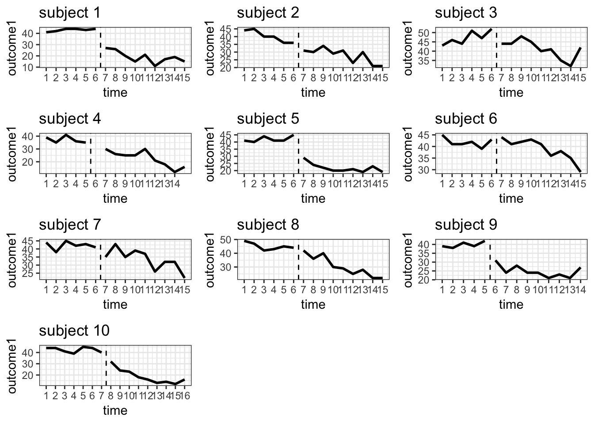
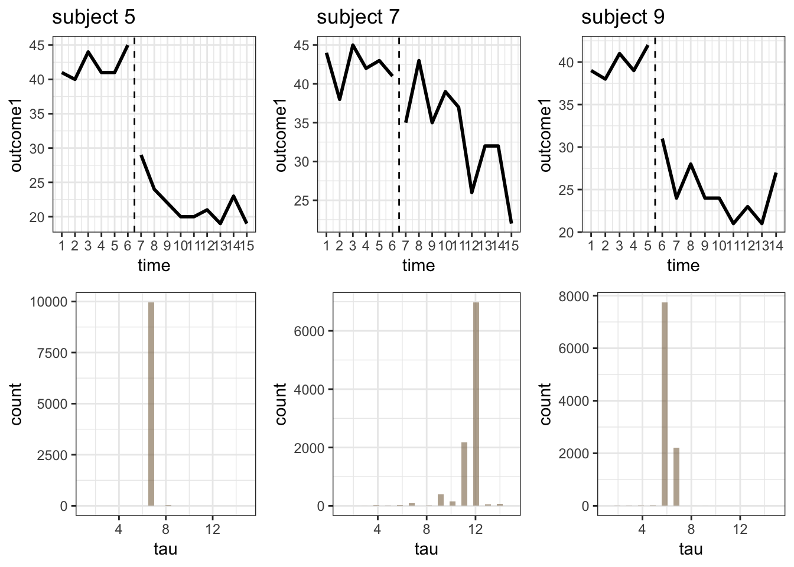
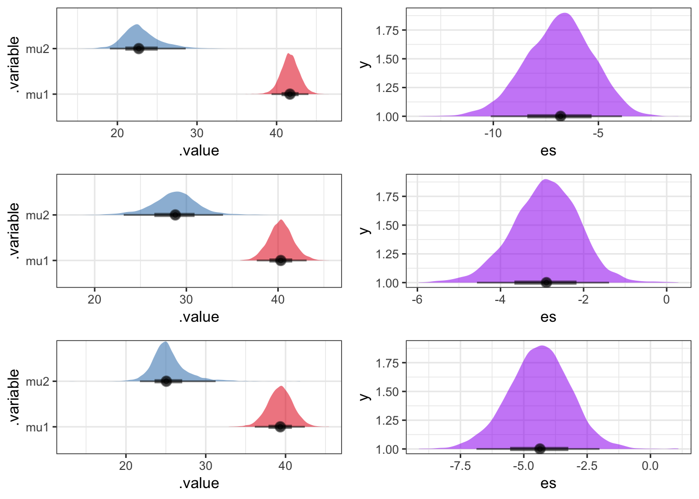
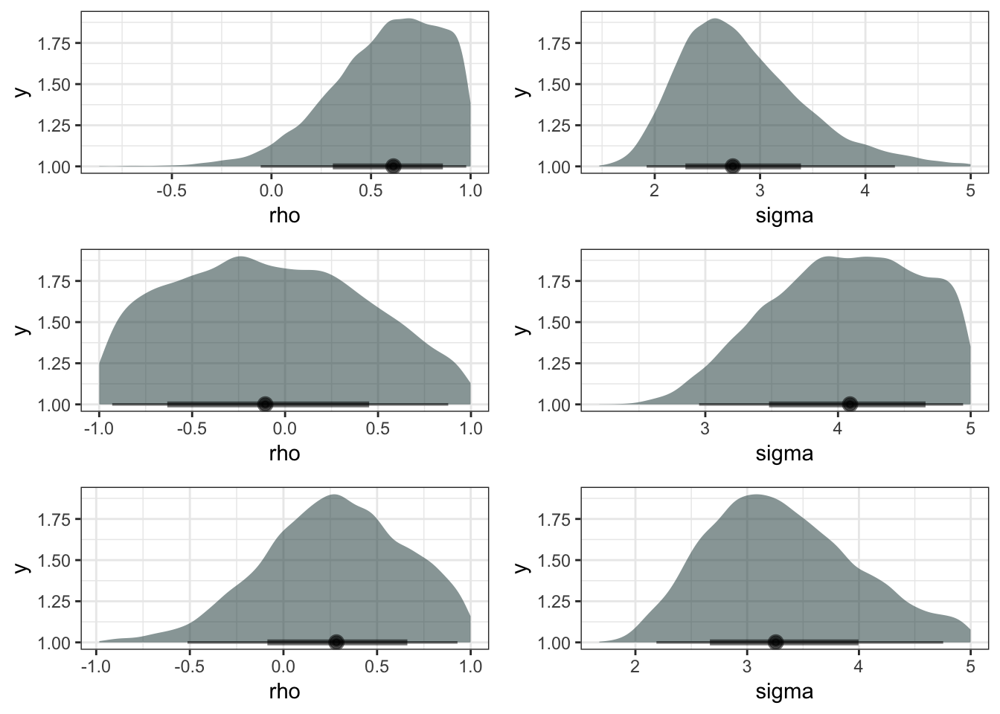

本記事は、Stan adventcalender 2018 3日目の記事になります。
ここでは、単一事例実験デザインで得られたデータで介入の効果を定量化する方法の１例を紹介します。
単一事例実験デザイン
単一事例実験デザインは、心理学の中で、特に行動分析学または応用行動分析学の領域で良く用いられています。その特徴は、単一または少数の被験体(研究参加者)に対して、介入(または独立変数の操作)を導入する前後で繰り返しアウトカム測定を行い、介入前のベースライン期の測定値と介入導入後の一定期間の測定値を比較することで、介入とアウトカムの変化の因果的な関係性を検討することです。疫学的な研究デザインのうち、分割時系列デザイン(Interrupted time series design)や回帰分断デザイン (regression discontinuity design)といった準実験デザインの亜系に含まれます。個人の時系列データから介入とアウトカムの変化の関係性を検討することを行動分析学では関数分析や機能分析と呼ぶそうです(どちらもfunctional analysisの訳語です)。
単一事例実験デザインには、ベースラインと介入期を単回または数回繰り返す\(AB^k\)デザイン、複数の被験体に対して介入導入時期をずらして関数分析を行う多層ベースラインデザインなどが種類の異なるデザインがいくつかありますが、ここでは最も単純なベースラインと介入期が一つのみの\(AB\)デザインを扱います。
単一事例実験のデザインや解析方法に関しては、下記のスライド等参照していただけたらと思います。
分析データ
今回の解析に使用するデータはOSFで公開されているデータから拝借しました。OSF、素敵です。
このデータは、軽度のうつや不安がある対象者10名に対して認知行動療法を導入し、その前後でアウトカムを反復測定して得られています。
10名の参加者のデータを可視化しておきます。
# データの読込
dat<-read.csv("test/ACTdata.csv")
# プロット用関数
row_plot<-function(data){
ggplot(data)+
geom_line(aes(x=time,y=outcome1,group=treatment),size=1)+
geom_vline(
xintercept=which.max(
data$time[data$treatment=="baseline"])+0.5,
line,linetype=2)+
scale_x_continuous(breaks=1:nrow(data))+
theme_bw()+ ggtitle(paste0("subject ",data$subject))
}
# subjectごとにデータをリスト化してmap関数でリストに上で作ったrow_plotをあてて、grid.arrange関数でひとまとめに表示
dat %>% split(list(.$subject)) %>% map(row_plot) -> row_plot_list
q0<-arrangeGrob(grobs=row_plot_list)
grid.arrange(q0)
点線が介入を導入した時点で個々人で異なります。 各参加者のベースライン期と介入期の平均も算出しておきます。
dat %>% group_by(subject)%>% filter(treatment=="baseline") %>% summarize(baseline=mean(outcome1)) -> means
dat %>% group_by(subject,treatment)%>%
summarize(mean=mean(outcome1)) %>% spread(key=treatment,value=mean) %>% kable(digits=2)| subject | baseline | treatment |
|---|---|---|
| 1 | 43.00 | 19.00 |
| 2 | 40.17 | 27.78 |
| 3 | 47.17 | 41.22 |
| 4 | 37.20 | 22.56 |
| 5 | 42.00 | 21.89 |
| 6 | 41.83 | 38.78 |
| 7 | 42.17 | 33.44 |
| 8 | 45.00 | 30.44 |
| 9 | 39.80 | 24.78 |
| 10 | 42.43 | 18.67 |
subject5やsubject9は介入導入後に著しく得点が低下しており、介入の導入が即時的にアウトカムに影響を与えていそうです。一方、subject7についてみてみると、介入の導入前後で得点が近接しています。アウトカムの変化が介入の導入後に即時的に生じているわけではなさそうです。ただし、時点12くらいには得点の顕著な低下が見られます。この人にとっては、介入の効果が少し遅れて発現するのかもしれません。
単純にベースライン期と介入期の平均の差を検討する場合に、subject5やsubject9の場合は問題なさそうですが、subject7については、介入の効果が遅れて発現することを考慮すると、効果が発現する前までの期間をベースライン、発現後の期間を介入期間にした方が介入の効果を適切に反映しているかもしれません。
そこで、真の介入導入時点を未知のパラメータとしてデータドリブンに推定し、推定された介入導入時点前後でデータの平均を比較しよう、と言うのが今回のお話です。ここでは、顕著な得点の変化が生じた時点を推定するモデルである変化点検出モデルを使って推定します。
なお、今回の推定の方法論は、下記の論文に従っています。変化点検出モデルを単一事例デザインに適用する意義やモデル詳細を知りたい人は参照ください。 Natesan, P., & Hedges, L. V. (2017). Bayesian unknown change-point models to investigate immediacy in single case designs. Psychological methods, 22(4), 743.
変化点検出モデル
各フェーズ\(p\)(ベースライン期 or 介入期)における初めの観測値\(y_{p1}\)が、平均\(\hat{y}_{p1}\),標準偏差\(\sigma^2_{\epsilon}\)の正規分布に従うとします。
\[y_{p1}\sim normal(\hat{y}_{p1},\sigma^2_\epsilon).\]
そして、以降の時点\(t\)におけるアウトカムの予測値は、
\[y_{pt}|H_{pt-1}, \Theta \sim normal(\hat{y}_{pt|(pt-1)},\sigma^2_e),\]
と正規分布に従うとします。
パラメータは下記の通りです。
- \(H_{pt-1}\): 過去の履歴
- \(\Theta\): パラメータベクトル
- \(\sigma^2_e\): ホワイトノイズ (ランダム誤差+自己相関)
- \(\sigma^2_\epsilon\): ランダム誤差
- \(\rho\):隣接時点間の自己相関
なお、\(\rho\),\(\sigma^2_e\)と\(\sigma^2_\epsilon\)の関係は、
\[\sigma_e=\frac{\sigma_\epsilon}{\sqrt {1-\rho^2}}, \]
で表現され、時系列データはラグ1の自己相関エラーを含む線形モデルとして下記のように表現可能となります。
線形モデルによる表現
アウトカムの予測値は各フェーズの切片\(\beta_{0p}\)と残差で下記のように表現され,
\[\hat{y}_{pt}=\beta_{0p}+e_{pt}, \]
自己相関を含む残差は,
\[e_{pt}=\rho e_{pt-1}+\epsilon, \]
と表現されます。
上記の2つの式のパラメータは下記の通りです。
- \(\hat{y}_{pt}\)：フェーズ\(p\)の時点\(t\)の標的行動の予測値
- \(\beta_{0p}\)：フェーズ\(p\)の回帰モデルの切片
- \(e_{pt}\)：フェーズ\(p\)の時点\(t\)の誤差
- \(\rho\): 自己相関係数
- \(\epsilon\): 独立して分布する誤差
ベースラインと介入期が1つのみのシンプルなABデザインの場合,ベースライン期の時点を\(1,2,...,t_b\)とし、介入期の時点を\(t_{b+1},...,t_n\)とします。
各フェーズの\(\beta_{0p}\)は、
\[\begin{eqnarray} \beta_{0p}=\left\{ \begin{array}{ll} \beta_{01}, t \leqq t_bの場合\\ \beta_{02}, その他の場合\\ \end{array} \right. \end{eqnarray}, \]
と表現されます。
また、\(\beta_{0p}\)は,
\[\beta_{0p}=\beta_{01}*dummy+\beta_{02}*(1-dummy),\] \[ここで, dummy=step(t_{b}-t)\]
と表現することができます。
ステップ関数は、関数内の式の値が負であれば0をそれ以外は1をかえします(stanではint_step関数)。なので、dummyには、時点がベースラインフェーズにあれば1をそれ以外の場合には0が割り当てられます。
このようなモデル式から, 介入導入時点を変化点\(t_b\)として推定します。
変化点検出モデル+AR1(CP_AR1)のStan_code
参考論文内にJagsのコードが記載されていたので、それをStanに書き変えてみました。KMSコード(きっともっとシュッとするコード)で恐縮です。このコードでJagsの推定した結果とほぼ一致します。事前分布の設定も論文とあわせていますが、適宜変更しても良いでしょう。先に説明したモデルと、Stanで書いたモデルでパラメータ名が異なりますので念のため、再度書いておきます。わかりずらくてすみません。
- mu1: ベースラインの切片(平均)
- mu2: 介入期の切片 (平均)
- sigma: ホワイトノイズ
- rho: 自己相関
- es: 標準化効果量 (mu2-mu1/sigma)
- tau: 周辺化消去で求める変化点
data {
int<lower=1>T;
real y[T];
}
parameters {
real mu1;
real mu2;
real<lower=0> sigma;
real <lower=-1,upper=1> rho;
}
transformed parameters {
vector[T] log_p;
vector[T] x;
vector[T] dummy;
real mu;
log_p = rep_vector(-log(T), T);
for (tau in 1:T){
for (i in 1:T){
if (i == 1){
x[1] = 0;
dummy[1] = 1;
log_p[tau] = log_p[tau] + normal_lpdf(y[1] | mu1, sigma);
}else{
dummy[i] = int_step(tau-i);
x[i] = dummy[i] * mu1 + (1 - dummy[i]) * mu2;
mu = i < tau ? x[i] : (x[i]+rho * (y[i - 1] - x[i - 1]));
log_p[tau] = log_p[tau] + normal_lpdf(y[i] | mu, sigma);
}
}
}
}
model {
mu1 ~ normal(0,100);
mu2 ~ normal(0,100);
rho ~ uniform(-1,1);
sigma ~uniform(0.1,5);
target += log_sum_exp(log_p);
}
//Draw the discrete parameter tau. This is highly inefficient
generated quantities {
int<lower=1,upper=T> tau;
real es;
tau = categorical_rng(softmax(log_p));
es = (mu2-mu1)/sigma;
}
このモデルで推定を行うRコードは下記の通りです。subject5,7,9の3名それぞれにモデルを適用しています。purrrのmap関数が便利です。
fit<-list()
# map関数でlist型で3つのデータの推定をする為に関数化
stan_list<-function(data){
y<-data
# 初期値に使うデータ
b1<- mean(y$outcome1[y$treatment=="baseline"],na.rm=T)
b2 <- mean(y$outcome1[y$treatment=="treatment"],na.rm=T)
time <- nrow(y)
# 初期値の指定
initf1<- function(){
list(mu1=rnorm(1, b1, 1),
mu2=rnorm(1,b2,1),
sigma=runif(1,0.1,5),
rho=runif(1,-1,1),
tau=sample(3:(time-2),1))
}
# stanによる推定の実行
rstan::sampling(CP_ar1,data=list(y=y$outcome1, T=length(y$outcome1)),init=initf1,
iter = 5000)
}
dat%>% filter(subject==5|subject==7|subject==9) %>%
split(.$subject) %>% map(stan_list) -> fit推定結果
収束診断の結果は割愛しますが、推定対象のパラメータはすべて\(\hat{R}\)が1.01以内で、問題なく収束していました。早速、変化点\(tau\)の推定結果を見てみましょう。
tau_plot<-function(data){
data %>% spread_draws(tau)%>%
ggplot()+geom_histogram(aes(x=tau),fill="burlywood4",alpha=0.6)+theme_bw()+
xlim(1,15)
}
fit %>% map(tau_plot) %>% arrangeGrob(grobs=.)->q1
q0_2<-list(q0$grobs$`5`,q0$grobs$`7`,q0$grobs$`9`,
q1$grobs$`5`,q1$grobs$`7`, q1$grobs$`9`)
grid.arrange(grobs=q0_2,ncol=3)
上段がローデータで、下段が変化点の推定結果です。subjetc5,9は推定された変化点が実際の介入導入時点に集中しています。一方で、subject7は、実際の介入導入時点と推定された変化点に乖離がみられます。subject7の変化点は12に集中しています。確かにローデータをみると、介入導入時点では大きな得点の変化がなく時点11までズルズルと得点が推移しています。ここでは時点11までは、ベースラインを引きずっていて、介入効果は12の時点で発現した解釈することにします。
ベースライン期と介入期の切片\(mu1,mu2\)とその差を標準偏差\(sigma\)で割った標準化効果量の推定結果をみてみましょう。標準化効果量は、generated quntitiesブロックで\(mu1,mu2,sigma\)から生成量として推定しています。
左が各フェーズの切片の事後分布、右が標準化効果量の事後分布です。上からsubject5,7,9の推定結果になっています。いずれの対象者においても、明らかに各切片の事後分布の重複が少なく、標準化効果量の推定結果も95%確信区間に0を含んでいません。この3名について、推定された変化点の前後で顕著な得点の変化があったといえます。
es_plot<-function(data){
data%>% spread_draws(es) %>%
ggplot(aes(x=es,y=1,alpha=0.7))+
geom_halfeyeh(fill="purple")+theme_bw()+
theme(legend.position="none")
}
dif_plot<-function(data){
data%>% gather_draws(mu1,mu2) %>%
ggplot(aes(x=.value,y=.variable,fill=.variable,alpha=.5))+
geom_halfeyeh()+scale_fill_brewer(palette="Set1")+theme_bw()+
theme(legend.position="none")
}
fit %>% map(es_plot) %>% arrangeGrob(grobs=.) ->q2
fit %>% map(dif_plot) %>% arrangeGrob(grobs=.) ->q3
grid.arrange(q3,q2,ncol=2)
最後に自己相関\(rho\)とホワイトノイズ\(sigma\)の事後分布も確認してみましょう。左が自己相関、右がホワイトノイズです。いずれも推定結果の不確実性が大きく、特に自己相関の不確実性が大きくなります。これは、測定時点数が15時点と少ないことが大きな要因の一つでしょう。
rho_plot<-function(data){
data%>% spread_draws(rho) %>%
ggplot(aes(x=rho,y=1,alpha=0.6))+
geom_halfeyeh(fill="darkslategrey")+theme_bw()+
theme(legend.position="none")
}
sigma_plot<-function(data){
data%>% spread_draws(sigma) %>%
ggplot(aes(x=sigma,y=1,alpha=0.6))+
geom_halfeyeh(fill="darkslategrey")+theme_bw()+
theme(legend.position="none")
}
fit %>% map(rho_plot) %>% arrangeGrob(grobs=.)->q4
fit %>% map(sigma_plot) %>% arrangeGrob(grobs=.)->q5
grid.arrange(q4,q5,ncol=2)
最後にsubject5,7,9それぞれの5つのパラメータの事後分布の要約統計量を示しておきます。
pi_table<-function(data){
data %>% gather_draws(rho,mu1,mu2,sigma,es) %>%
point_interval(.interval=hdi)
}
fit %>% map(pi_table) %>% bind_rows() %>% mutate(subject=rep(c(5,7,9),each=5)) %>% kable(digits=2)| .variable | .value | .lower | .upper | .width | .point | .interval | subject |
|---|---|---|---|---|---|---|---|
| es | -6.77 | -10.01 | -3.62 | 0.95 | median | hdi | 5 |
| mu1 | 41.72 | 39.47 | 44.17 | 0.95 | median | hdi | 5 |
| mu2 | 22.69 | 18.68 | 28.48 | 0.95 | median | hdi | 5 |
| rho | 0.61 | 0.06 | 1.00 | 0.95 | median | hdi | 5 |
| sigma | 2.76 | 1.76 | 4.08 | 0.95 | median | hdi | 5 |
| es | -2.88 | -4.49 | -1.37 | 0.95 | median | hdi | 7 |
| mu1 | 40.25 | 37.60 | 42.90 | 0.95 | median | hdi | 7 |
| mu2 | 28.79 | 23.12 | 34.00 | 0.95 | median | hdi | 7 |
| rho | -0.08 | -1.00 | 0.78 | 0.95 | median | hdi | 7 |
| sigma | 4.09 | 3.13 | 5.00 | 0.95 | median | hdi | 7 |
| es | -4.38 | -7.01 | -2.01 | 0.95 | median | hdi | 9 |
| mu1 | 39.28 | 36.25 | 42.59 | 0.95 | median | hdi | 9 |
| mu2 | 25.02 | 20.98 | 30.56 | 0.95 | median | hdi | 9 |
| rho | 0.28 | -0.37 | 1.00 | 0.95 | median | hdi | 9 |
| sigma | 3.23 | 2.13 | 4.65 | 0.95 | median | hdi | 9 |
終わりに
以上のように単一事例実験デザインで得られたデータを、変化点検出モデルを使って解析してみました。2017年に提案されたとても新しいモデルで、今後適用例が増えていくと楽しいですね。個々人の変化点を推定したあとで、その変化点からベースラインと介入フェーズを指定し直して、階層モデルを使って複数名の時系列データから標準化効果量を算出する方法なども提案されています。単一事例実験の解析は、ここ数年がいくつかベイズ流のモデルが提案されてきていて興味深い限りです。それらについても別な機会に紹介できたらと思います。
Enjoy Stan !!
session info
sessionInfo()## R version 3.5.0 (2018-04-23)
## Platform: x86_64-apple-darwin15.6.0 (64-bit)
## Running under: macOS High Sierra 10.13.3
##
## Matrix products: default
## BLAS: /Library/Frameworks/R.framework/Versions/3.5/Resources/lib/libRblas.0.dylib
## LAPACK: /Library/Frameworks/R.framework/Versions/3.5/Resources/lib/libRlapack.dylib
##
## locale:
## [1] ja_JP.UTF-8/ja_JP.UTF-8/ja_JP.UTF-8/C/ja_JP.UTF-8/ja_JP.UTF-8
##
## attached base packages:
## [1] stats graphics grDevices utils datasets methods base
##
## other attached packages:
## [1] bindrcpp_0.2.2 RColorBrewer_1.1-2 gridExtra_2.3
## [4] rstan_2.18.1 StanHeaders_2.18.0 tidybayes_1.0.3
## [7] forcats_0.3.0 stringr_1.3.1 dplyr_0.7.8
## [10] purrr_0.2.5 readr_1.1.1 tidyr_0.8.2
## [13] tibble_1.4.2 ggplot2_3.1.0 tidyverse_1.2.1
## [16] zousan_0.0.0.170825 knitr_1.21
##
## loaded via a namespace (and not attached):
## [1] httr_1.3.1 jsonlite_1.6
## [3] modelr_0.1.2 assertthat_0.2.0
## [5] highr_0.7 stats4_3.5.0
## [7] ggstance_0.3.1 cellranger_1.1.0
## [9] yaml_2.2.0 pillar_1.3.0
## [11] backports_1.1.2 lattice_0.20-38
## [13] glue_1.3.0 arrayhelpers_1.0-20160527
## [15] digest_0.6.18 rvest_0.3.2
## [17] colorspace_1.3-2 htmltools_0.3.6
## [19] plyr_1.8.4 pkgconfig_2.0.2
## [21] broom_0.5.0 HDInterval_0.2.0
## [23] svUnit_0.7-12 haven_1.1.2
## [25] bookdown_0.7 scales_1.0.0
## [27] processx_3.2.0 withr_2.1.2
## [29] lazyeval_0.2.1 cli_1.0.1
## [31] magrittr_1.5 crayon_1.3.4
## [33] readxl_1.1.0 evaluate_0.12
## [35] ps_1.2.1 nlme_3.1-137
## [37] MASS_7.3-51.1 xml2_1.2.0
## [39] pkgbuild_1.0.2 blogdown_0.9
## [41] tools_3.5.0 loo_2.0.0
## [43] prettyunits_1.0.2 hms_0.4.2
## [45] matrixStats_0.54.0 munsell_0.5.0
## [47] callr_3.0.0 compiler_3.5.0
## [49] rlang_0.3.0.1 debugme_1.1.0
## [51] grid_3.5.0 RCurl_1.95-4.11
## [53] ggridges_0.5.1 rstudioapi_0.8
## [55] bitops_1.0-6 base64enc_0.1-3
## [57] labeling_0.3 rmarkdown_1.11
## [59] codetools_0.2-15 gtable_0.2.0
## [61] inline_0.3.15 R6_2.3.0
## [63] lubridate_1.7.4 bindr_0.1.1
## [65] stringi_1.2.4 parallel_3.5.0
## [67] Rcpp_1.0.0 tidyselect_0.2.5
## [69] xfun_0.4 coda_0.19-2